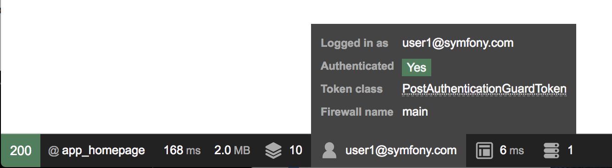

How to Build a Login Form¶
See also
If you’re looking for the form_login firewall option, see
Using the form_login Authentication Provider.
Ready to create a login form? First, make sure you’ve followed the main
Security Guide to install security and create your User
class.
Generating the Login Form¶
Creating a powerful login form can be bootstrapped with the make:auth command from
MakerBundle. Depending on your setup, you may be asked different questions
and your generated code may be slightly different:
1 2 3 4 5 6 7 8 9 10 11 12 13 14 15 16 17 18 19 20 | $ php bin/console make:auth
What style of authentication do you want? [Empty authenticator]:
[0] Empty authenticator
[1] Login form authenticator
> 1
The class name of the authenticator to create (e.g. AppCustomAuthenticator):
> LoginFormAuthenticator
Choose a name for the controller class (e.g. SecurityController) [SecurityController]:
> SecurityController
Do you want to generate a '/logout' URL? (yes/no) [yes]:
> yes
created: src/Security/LoginFormAuthenticator.php
updated: config/packages/security.yaml
created: src/Controller/SecurityController.php
created: templates/security/login.html.twig
|
New in version 1.8: Support for login form authentication was added to make:auth in MakerBundle 1.8.
This generates the following: 1) login/logout routes & controller, 2) a template that renders the login form, 3) a Guard authenticator class that processes the login submit and 4) updates the main security config file.
Step 1. The /login//logout routes & controller:
// src/Controller/SecurityController.php
namespace App\Controller;
use Symfony\Bundle\FrameworkBundle\Controller\AbstractController;
use Symfony\Component\HttpFoundation\Response;
use Symfony\Component\Routing\Annotation\Route;
use Symfony\Component\Security\Http\Authentication\AuthenticationUtils;
class SecurityController extends AbstractController
{
/**
* @Route("/login", name="app_login")
*/
public function login(AuthenticationUtils $authenticationUtils): Response
{
// if ($this->getUser()) {
// return $this->redirectToRoute('target_path');
// }
// get the login error if there is one
$error = $authenticationUtils->getLastAuthenticationError();
// last username entered by the user
$lastUsername = $authenticationUtils->getLastUsername();
return $this->render('security/login.html.twig', ['last_username' => $lastUsername, 'error' => $error]);
}
/**
* @Route("/logout", name="app_logout")
*/
public function logout()
{
throw new \LogicException('This method can be blank - it will be intercepted by the logout key on your firewall.');
}
}
Edit the security.yaml file in order to declare the /logout path:
- YAML
1 2 3 4 5 6 7 8 9 10 11
# config/packages/security.yaml security: # ... firewalls: main: # ... logout: path: app_logout # where to redirect after logout # target: app_any_route
- XML
1 2 3 4 5 6 7 8 9 10 11 12 13 14 15 16 17 18
<!-- config/packages/security.xml --> <?xml version="1.0" charset="UTF-8" ?> <srv:container xmlns="http://symfony.com/schema/dic/security" xmlns:xsi="http://www.w3.org/2001/XMLSchema-instance" xmlns:srv="http://symfony.com/schema/dic/services" xsi:schemaLocation="http://symfony.com/schema/dic/services https://symfony.com/schema/dic/services/services-1.0.xsd http://symfony.com/schema/dic/security https://symfony.com/schema/dic/security/security-1.0.xsd"> <config> <!-- ... --> <firewall name="main"> <!-- ... --> <logout path="app_logout"/> </firewall> </config> </srv:container>
- PHP
1 2 3 4 5 6 7 8 9 10 11 12 13 14
// config/packages/security.php $container->loadFromExtension('security', [ // ... 'firewalls' => [ 'main' => [ // ... 'logout' => [ 'path' => 'app_logout', // where to redirect after logout 'target' => 'app_any_route' ], ], ], ]);
Step 2. The template has very little to do with security: it generates
a traditional HTML form that submits to /login:
1 2 3 4 5 6 7 8 9 10 11 12 13 14 15 16 17 18 19 20 21 22 23 24 25 26 27 28 29 30 31 32 33 34 35 36 37 38 39 40 41 42 | {% extends 'base.html.twig' %}
{% block title %}Log in!{% endblock %}
{% block body %}
<form method="post">
{% if error %}
<div class="alert alert-danger">{{ error.messageKey|trans(error.messageData, 'security') }}</div>
{% endif %}
{% if app.user %}
<div class="mb-3">
You are logged in as {{ app.user.username }}, <a href="{{ path('app_logout') }}">Logout</a>
</div>
{% endif %}
<h1 class="h3 mb-3 font-weight-normal">Please sign in</h1>
<label for="inputEmail">Email</label>
<input type="email" value="{{ last_username }}" name="email" id="inputEmail" class="form-control" required autofocus>
<label for="inputPassword">Password</label>
<input type="password" name="password" id="inputPassword" class="form-control" required>
<input type="hidden" name="_csrf_token"
value="{{ csrf_token('authenticate') }}"
>
{#
Uncomment this section and add a remember_me option below your firewall to activate remember me functionality.
See https://symfony.com/doc/current/security/remember_me.html
<div class="checkbox mb-3">
<label>
<input type="checkbox" name="_remember_me"> Remember me
</label>
</div>
#}
<button class="btn btn-lg btn-primary" type="submit">
Sign in
</button>
</form>
{% endblock %}
|
Step 3. The Guard authenticator processes the form submit:
// src/Security/LoginFormAuthenticator.php
namespace App\Security;
use App\Entity\User;
use Doctrine\ORM\EntityManagerInterface;
use Symfony\Component\HttpFoundation\RedirectResponse;
use Symfony\Component\HttpFoundation\Request;
use Symfony\Component\Routing\Generator\UrlGeneratorInterface;
use Symfony\Component\Security\Core\Authentication\Token\TokenInterface;
use Symfony\Component\Security\Core\Encoder\UserPasswordEncoderInterface;
use Symfony\Component\Security\Core\Exception\CustomUserMessageAuthenticationException;
use Symfony\Component\Security\Core\Exception\InvalidCsrfTokenException;
use Symfony\Component\Security\Core\Security;
use Symfony\Component\Security\Core\User\UserInterface;
use Symfony\Component\Security\Core\User\UserProviderInterface;
use Symfony\Component\Security\Csrf\CsrfToken;
use Symfony\Component\Security\Csrf\CsrfTokenManagerInterface;
use Symfony\Component\Security\Guard\Authenticator\AbstractFormLoginAuthenticator;
use Symfony\Component\Security\Guard\PasswordAuthenticatedInterface;
use Symfony\Component\Security\Http\Util\TargetPathTrait;
class LoginFormAuthenticator extends AbstractFormLoginAuthenticator implements PasswordAuthenticatedInterface
{
use TargetPathTrait;
public const LOGIN_ROUTE = 'app_login';
private $entityManager;
private $urlGenerator;
private $csrfTokenManager;
private $passwordEncoder;
public function __construct(EntityManagerInterface $entityManager, UrlGeneratorInterface $urlGenerator, CsrfTokenManagerInterface $csrfTokenManager, UserPasswordEncoderInterface $passwordEncoder)
{
$this->entityManager = $entityManager;
$this->urlGenerator = $urlGenerator;
$this->csrfTokenManager = $csrfTokenManager;
$this->passwordEncoder = $passwordEncoder;
}
public function supports(Request $request)
{
return self::LOGIN_ROUTE === $request->attributes->get('_route')
&& $request->isMethod('POST');
}
public function getCredentials(Request $request)
{
$credentials = [
'email' => $request->request->get('email'),
'password' => $request->request->get('password'),
'csrf_token' => $request->request->get('_csrf_token'),
];
$request->getSession()->set(
Security::LAST_USERNAME,
$credentials['email']
);
return $credentials;
}
public function getUser($credentials, UserProviderInterface $userProvider)
{
$token = new CsrfToken('authenticate', $credentials['csrf_token']);
if (!$this->csrfTokenManager->isTokenValid($token)) {
throw new InvalidCsrfTokenException();
}
$user = $this->entityManager->getRepository(User::class)->findOneBy(['email' => $credentials['email']]);
if (!$user) {
// fail authentication with a custom error
throw new CustomUserMessageAuthenticationException('Email could not be found.');
}
return $user;
}
public function checkCredentials($credentials, UserInterface $user)
{
return $this->passwordEncoder->isPasswordValid($user, $credentials['password']);
}
/**
* Used to upgrade (rehash) the user's password automatically over time.
*/
public function getPassword($credentials): ?string
{
return $credentials['password'];
}
public function onAuthenticationSuccess(Request $request, TokenInterface $token, $providerKey)
{
if ($targetPath = $this->getTargetPath($request->getSession(), $providerKey)) {
return new RedirectResponse($targetPath);
}
// For example : return new RedirectResponse($this->urlGenerator->generate('some_route'));
throw new \Exception('TODO: provide a valid redirect inside '.__FILE__);
}
protected function getLoginUrl()
{
return $this->urlGenerator->generate(self::LOGIN_ROUTE);
}
}
Step 4. Updates the main security config file to enable the Guard authenticator and configure logout route:
- YAML
1 2 3 4 5 6 7 8 9 10 11 12
# config/packages/security.yaml security: # ... firewalls: main: # ... guard: authenticators: - App\Security\LoginFormAuthenticator logout: path: app_logout
- XML
1 2 3 4 5 6 7 8 9 10 11 12 13 14 15 16 17 18 19 20 21
<!-- config/packages/security.xml --> <?xml version="1.0" charset="UTF-8" ?> <srv:container xmlns="http://symfony.com/schema/dic/security" xmlns:xsi="http://www.w3.org/2001/XMLSchema-instance" xmlns:srv="http://symfony.com/schema/dic/services" xsi:schemaLocation="http://symfony.com/schema/dic/services https://symfony.com/schema/dic/services/services-1.0.xsd http://symfony.com/schema/dic/security https://symfony.com/schema/dic/security/security-1.0.xsd"> <config> <!-- ... --> <firewall name="main"> <!-- ... --> <guard> <authenticator class="App\Security\LoginFormAuthenticator"/> </guard> <logout path="app_logout"/> </firewall> </config> </srv:container>
- PHP
1 2 3 4 5 6 7 8 9 10 11 12 13 14 15 16 17 18 19
// config/packages/security.php use App\Security\LoginFormAuthenticator; $container->loadFromExtension('security', [ // ... 'firewalls' => [ 'main' => [ // ..., 'guard' => [ 'authenticators' => [ LoginFormAuthenticator::class, ] ], 'logout' => [ 'path' => 'app_logout', ], ], ], ]);
Finishing the Login Form¶
Woh. The make:auth command just did a lot of work for you. But, you’re not done
yet. First, go to /login to see the new login form. Feel free to customize this
however you want.
When you submit the form, the LoginFormAuthenticator will intercept the request,
read the email (or whatever field you’re using) & password from the form, find the
User object, validate the CSRF token and check the password.
But, depending on your setup, you’ll need to finish one or more TODOs before the whole process works. You will at least need to fill in where you want your user to be redirected after success:
1 2 3 4 5 6 7 8 9 10 11 | // src/Security/LoginFormAuthenticator.php
// ...
public function onAuthenticationSuccess(Request $request, TokenInterface $token, $providerKey)
{
// ...
- throw new \Exception('TODO: provide a valid redirect inside '.__FILE__);
+ // redirect to some "app_homepage" route - of wherever you want
+ return new RedirectResponse($this->urlGenerator->generate('app_homepage'));
}
|
Unless you have any other TODOs in that file, that’s it! If you’re loading users from the database, make sure you’ve loaded some dummy users. Then, try to login.
If you’re successful, the web debug toolbar will tell you who you are and what roles you have:
The Guard authentication system is powerful, and you can customize your authenticator class to do whatever you need. To learn more about what the individual methods do, see Custom Authentication System with Guard (API Token Example).
Controlling Error Messages¶
You can cause authentication to fail with a custom message at any step by throwing
a custom CustomUserMessageAuthenticationException.
But in some cases, like if you return false from checkCredentials(), you
may see an error that comes from the core of Symfony - like Invalid credentials..
To customize this message, you could throw a CustomUserMessageAuthenticationException
instead. Or, you can translate the message through the security
domain:
- XML
1 2 3 4 5 6 7 8 9 10 11 12
<!-- translations/security.en.xlf --> <?xml version="1.0"?> <xliff version="1.2" xmlns="urn:oasis:names:tc:xliff:document:1.2"> <file source-language="en" datatype="plaintext" original="file.ext"> <body> <trans-unit id="Invalid credentials."> <source>Invalid credentials.</source> <target>The password you entered was invalid!</target> </trans-unit> </body> </file> </xliff>
- YAML
1 2
# translations/security.en.yaml 'Invalid credentials.': 'The password you entered was invalid!'
- PHP
1 2 3 4
// translations/security.en.php return [ 'Invalid credentials.' => 'The password you entered was invalid!', ];
If the message isn’t translated, make sure you’ve installed the translator
and try clearing your cache:
1 | $ php bin/console cache:clear
|
Redirecting to the Last Accessed Page with TargetPathTrait¶
The last request URI is stored in a session variable named
_security.<your providerKey>.target_path (e.g. _security.main.target_path
if the name of your firewall is main). Most of the times you don’t have to
deal with this low level session variable. However, the
TargetPathTrait utility
can be used to read (like in the example above) or set this value manually.
When the user tries to access a restricted page, they are being redirected to the login page. At that point target path will be set. After a successful login, the user will be redirected to this previously set target path.
If you also want to apply this behavior to public pages, you can create an event subscriber to set the target path manually whenever the user browses a page:
// src/EventSubscriber/RequestSubscriber.php
namespace App\EventSubscriber;
use Symfony\Component\EventDispatcher\EventSubscriberInterface;
use Symfony\Component\HttpFoundation\Session\SessionInterface;
use Symfony\Component\HttpKernel\Event\RequestEvent;
use Symfony\Component\HttpKernel\KernelEvents;
use Symfony\Component\Security\Http\Util\TargetPathTrait;
class RequestSubscriber implements EventSubscriberInterface
{
use TargetPathTrait;
private $session;
public function __construct(SessionInterface $session)
{
$this->session = $session;
}
public function onKernelRequest(RequestEvent $event): void
{
$request = $event->getRequest();
if (
!$event->isMasterRequest()
|| $request->isXmlHttpRequest()
|| 'app_login' === $request->attributes->get('_route')
) {
return;
}
$this->saveTargetPath($this->session, 'main', $request->getUri());
}
public static function getSubscribedEvents()
{
return [
KernelEvents::REQUEST => ['onKernelRequest']
];
}
}